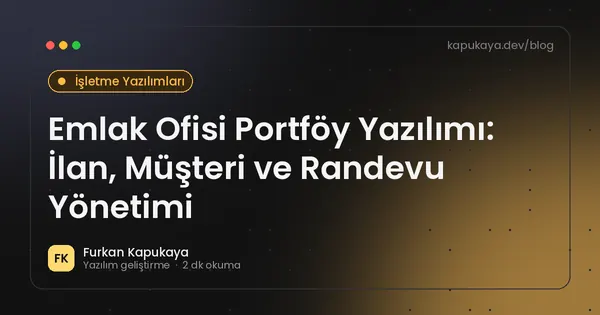
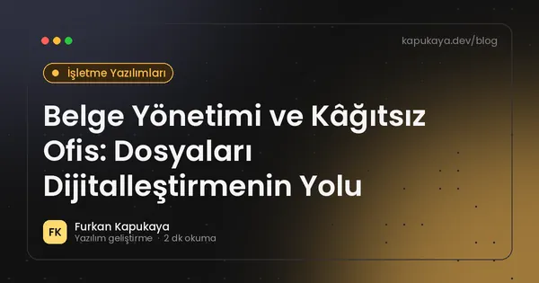
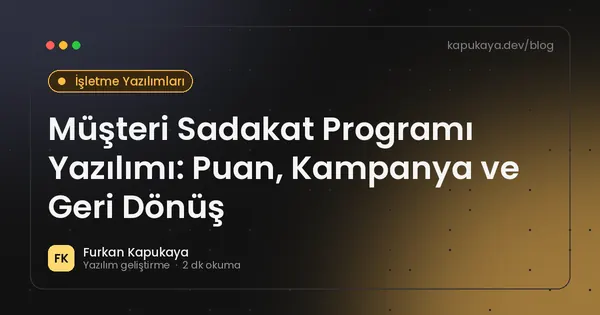
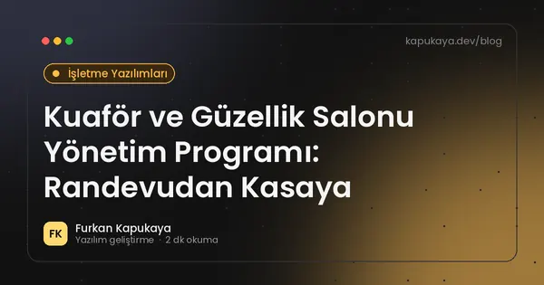
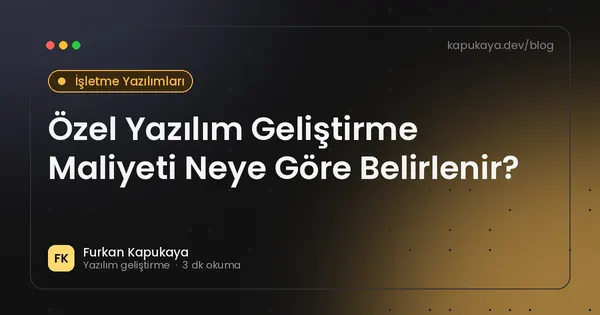
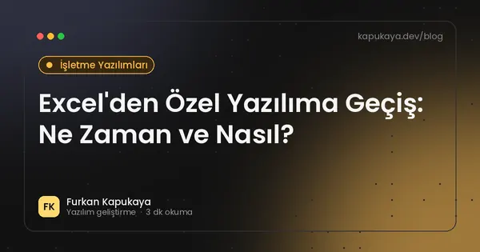
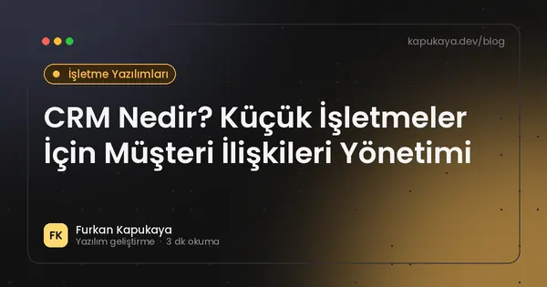
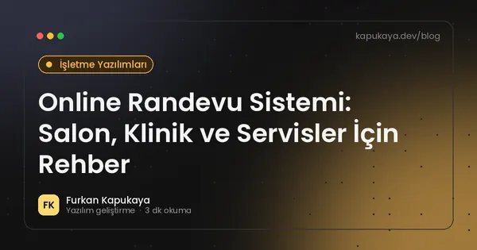
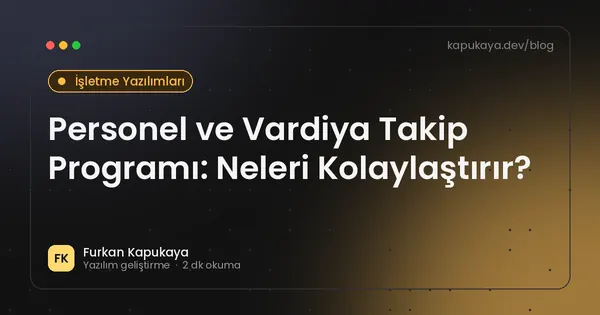
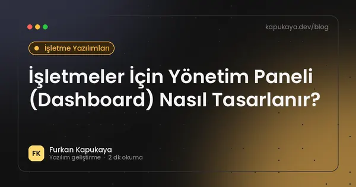

İşletme Yazılımları
Stok, randevu, CRM, ERP, teknik servis ve sektöre özel yazılımlarla işletme süreçlerini dijitalleştirme.
19 yazı

Emlak Ofisi Portföy Yazılımı: İlan, Müşteri ve Randevu Yönetimi
Emlak ofisleri için portföy kaydı, müşteri talep eşleştirme, yer gösterme randevuları, ilan sitesi entegrasyonu, web sitesi ve yetki belgesi gibi mevzuat konularını kapsayan yazılım rehberi.
Yazıyı oku
Belge Yönetimi ve Kâğıtsız Ofis: Dosyaları Dijitalleştirmenin Yolu
İşletmelerde belgeleri dijital ortamda düzenleme, sürüm kontrolü, yetkilendirme, arama, e-imza, saklama süreleri ve KVKK'ya uygun imha süreçleriyle belge yönetim sistemi rehberi.
Yazıyı oku
Müşteri Sadakat Programı Yazılımı: Puan, Kampanya ve Geri Dönüş
Kafe, salon, mağaza ve hizmet işletmeleri için puan, damga kartı, kademeli üyelik ve kampanya yönetimi içeren sadakat programı yazılımının kurgusu ve KVKK ile İYS uyumu.
Yazıyı oku
Stok Takip Programı Nasıl Seçilir? İşletmeler İçin Rehber
Stok takip programında olması gereken özellikler, barkod ve çoklu depo desteği, raporlama, hazır ve özel yazılım karşılaştırması ile seçim kriterleri.
Yazıyı oku
Kuaför ve Güzellik Salonu Yönetim Programı: Randevudan Kasaya
Kuaför, berber ve güzellik salonları için online randevu, personel takvimi, müşteri geçmişi, SMS hatırlatma, paket seans takibi, kasa ve prim hesaplamalarını içeren salon programı rehberi.
Yazıyı oku
Özel Yazılım Geliştirme Maliyeti Neye Göre Belirlenir?
Özel yazılım projelerinde maliyeti etkileyen kapsam, ekran sayısı, entegrasyon, kullanıcı rolleri, platform, test ve bakım kalemleri ile bütçe planlama önerileri.
Yazıyı oku
Ön Muhasebe Programı Seçerken Nelere Dikkat Edilmeli?
Ön muhasebe programında cari hesap, fatura, kasa-banka, stok, e-fatura ve e-arşiv entegrasyonu, raporlama ve mali müşavirle veri paylaşımı açısından seçim kriterleri.
Yazıyı oku
Bulut mu, Yerel Sunucu mu? İşletme Yazılımları İçin Doğru Altyapı
İşletme yazılımlarını bulutta veya yerel sunucuda çalıştırmanın maliyet, erişim, güvenlik, internet bağımlılığı ve yedekleme açısından karşılaştırması.
Yazıyı oku
Excel'den Özel Yazılıma Geçiş: Ne Zaman ve Nasıl?
Excel ile iş takibinin sınırları, özel yazılıma geçiş zamanının işaretleri, veri temizliği, taşıma adımları ve geçişte yapılan yaygın hatalar.
Yazıyı oku
ERP Nedir? KOBİ'ler İçin Gerekli mi, Ne Zaman Geçilmeli?
ERP sisteminin ne olduğu, hangi modüllerden oluştuğu, KOBİ'lerin ERP'ye ne zaman ihtiyaç duyduğu, hazır ERP ile özel yazılım karşılaştırması ve geçişte dikkat edilecekler.
Yazıyı oku
İşletmeler İçin Masaüstü Otomasyon Sistemleri
Stok, satış, müşteri, personel ve servis süreçlerinin özel yazılımla nasıl dijitalleştirilebileceğini anlatan rehber.
Yazıyı oku
Araç Bakım ve Filo Takip Yazılımı: Servis, Lastik ve Hatırlatmalar
Oto servis, lastik firmaları ve araç filosu yöneten işletmeler için plaka bazlı kayıt, bakım geçmişi, lastik oteli, periyodik bakım hatırlatmaları ve stok takibi içeren yazılım rehberi.
Yazıyı oku
CRM Nedir? Küçük İşletmeler İçin Müşteri İlişkileri Yönetimi
CRM'in ne olduğu, küçük ve orta ölçekli işletmelere faydaları, temel modüller, satış hunisi, doğru CRM seçimi ve başarılı kullanım ipuçları.
Yazıyı oku
KOBİ'ler İçin Dijital Dönüşüm Yol Haritası: Nereden Başlamalı?
Küçük ve orta ölçekli işletmeler için dijital dönüşümün adımları, öncelik belirleme, hızlı kazanımlar, veri düzeni, ekip uyumu ve bütçeyi verimli kullanma önerileri.
Yazıyı oku
Teknik Servis Takip Programı: Arıza Kaydından Teslime
Teknik servis işletmeleri için arıza kaydı, servis fişi, parça ve stok takibi, müşteri bilgilendirme SMS'leri, garanti takibi ve teknisyen performans raporlarını içeren yazılım rehberi.
Yazıyı oku
Online Randevu Sistemi: Salon, Klinik ve Servisler İçin Rehber
Online randevu sisteminin işletmeye faydaları, olması gereken özellikler, hatırlatma, personel takvimi, KVKK ve web sitesi entegrasyonu.
Yazıyı oku
QR Menü Sistemi: Restoran ve Kafeler İçin Kurallar ve İpuçları
Restoran, kafe ve pastanelerde QR menü kullanımı, Fiyat Etiketi Yönetmeliği'ndeki güncel kurallar, basılı fiyat listesi zorunluluğu, hızlı ve erişilebilir dijital menü tasarımı.
Yazıyı oku
Personel ve Vardiya Takip Programı: Neleri Kolaylaştırır?
Personel bilgileri, vardiya planlama, izin ve mesai takibi, giriş-çıkış kayıtları ve raporlama için personel takip yazılımının sağladığı faydalar ve KVKK açısından dikkat edilecekler.
Yazıyı oku
İşletmeler İçin Yönetim Paneli (Dashboard) Nasıl Tasarlanır?
Yöneticilerin tek ekranda işletmenin durumunu görmesini sağlayan dashboard tasarımında doğru metrikleri seçme, veri kaynaklarını birleştirme, görselleştirme ve yetkilendirme önerileri.
Yazıyı oku
Aramanızla eşleşen yazı bulunamadı. Farklı bir kelime deneyin veya tüm yazıları gösterin.